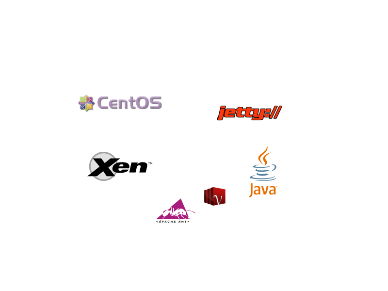
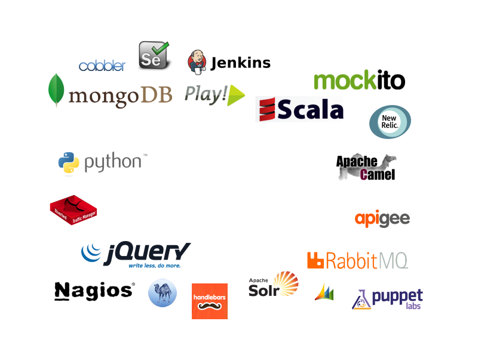
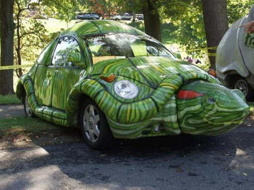

@
What is Gilt?

Every noon...
Technology stack


Current service stack
Stingray Traffic Manager
Jetty
JAX-RS + Jackson
Scala
MongoDB / PostgreSQL / other services
MongoDB
Why?
Disclosure: 10gen ∩ Gilt
It works for us
How much?
>20 databases
>500G data
6 big bare metal servers
Case study
User service
Old monolithic service
Had caused site outages
Has old-style name
svc-user
Replaces most troublesome user service endpoints
150KRPM at peak
Polls DB table for updates, replicates in Mongo
Has new-style name
Result:
{kind=link}
First attempt:
Rate-limit writes
Configurable rate in Hz
Allow high-priority updates to skip the queue
Result:

Next attempt:
SSD
RAID1 over 2 drives for journals +
RAID10 over 4 drives for data =
About $5K per server
Result:
300 writes/s, 1ms avg. response time, <1ms std. dev, 8ms P99
Monitoring
mms.10gen.com
... is not enough. Solutions:
Write a Nagios plugin
Rely on services to log errors
Bury head in sand
Don't do this

... no really, don't
Bad:
db.collection.ensureIndex({key: 1})Blocks all other operations
“I don't care to belong to any club that will have me as a member”
Better:
db.collection.ensureIndex({key: 1}, {background: true})